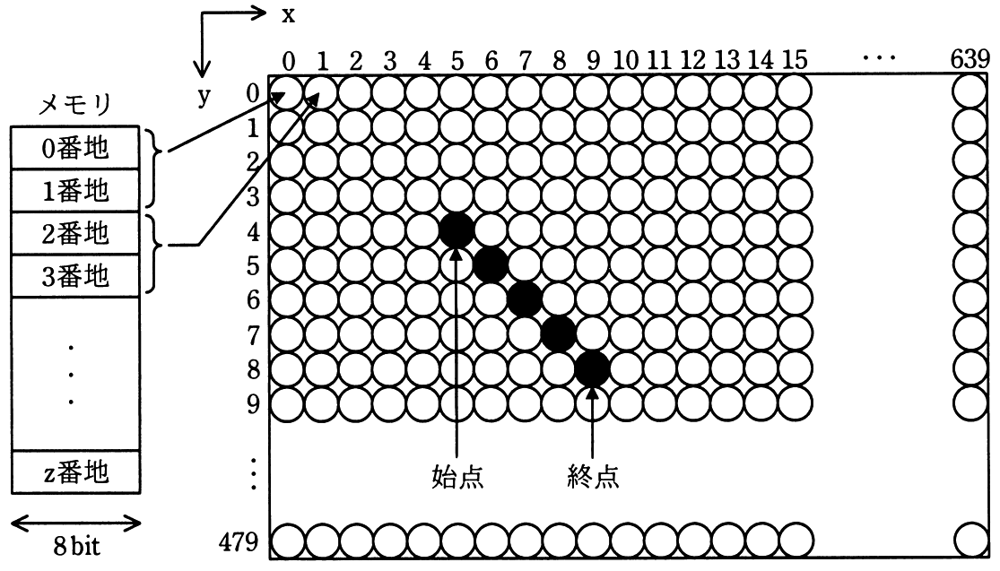

次の方式で画素にメモリを割り当てる640×480のグラフィックLCDモジュールがある。座標（x，y）で始点（5，4）から終点（9,8）まで直線を描画するとき，直線上のx＝7の画素に割り当てられたメモリのアドレスの先頭は何番地か。
〔方式〕
・メモリは0番地から昇順に使用する。
・1画素は16ビットとする。
・座標（0，0）から座標（639，479）まで連続して割り当てる。
・各画素は，x＝0からx軸の方向にメモリを割り当てていく。
・x＝639の次はx＝0とし，yを1増やす。

ア 3847番地
イ 7680番地
ウ 7694番地
エ 8978番地